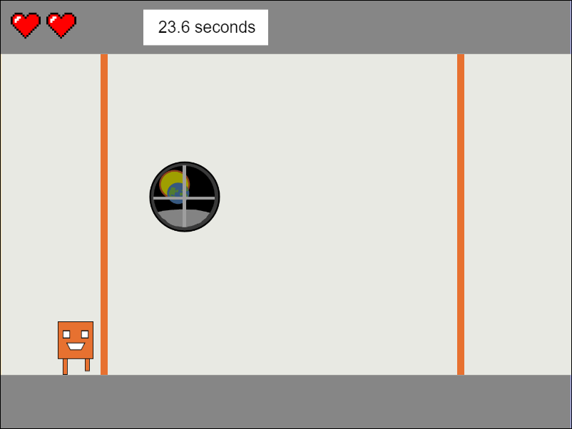

Please be aware that these downloads may not display properly or work at all on mobile devices
Programming Assignments
- Qwicky's Run
- Meet Qwicky. Qwicky has the ability to swap colors and flip gravity. In this game,
Qwicky must swap colors to match the color of the on-coming lasers. Miss 3 times
and Qwicky hits a game over.
(This JavaScript game is only compatible with keyboards)
This assignment is currently a work in progress. Upcoming features include an online leaderboard and controls for mobile devices. This is what I chose to do for my final Client Side Programming class assignment and has since become a passion project. - Poker API Site
- This site uses a card dealing API to give two 5 card hands. I coded
a scoring system in JavaScript to determine the rank/score of
each hand and determine the winner. You can also view stats to
see how often each hand rank showed up.
This assignment reminded me that it's important to break the workload down to pieces. My original draft of this would only score the highest card in each hand. I continued to add scoring features piece by piece.
- Android Movie Trailer App (.apk)
- My final assignment for Mobile Android Application Development. The user can view movie trailers along with their
description. The user can add movie trailers and delete existing ones at will. Movie details are saved using a
connection to an SQLite database.
This is an extension of everything I have learned in Android Development thus far. I spent countless hours ensuring the database components work without crashing the app or running into logic errors. I also focused on designing a modern, light layout and look. I consider this assignment to be a crowning achievement. I plan to use this as a prime demonstration of my skills to future employers. - Android Picture Select App (.apk)
- The purpose of this assignment was to tackle responsive design for all devices. On
narrow devices, only one pane is shown at a time. On wider devices, two panes are shown at once,
displaying both the list and image at the same time. This assignment also implements other features
including shared preference saving and xml animations.
This assignment used the master detail template as a base. As a result, this tested my ability to read, understand, and work with pre-existing code. I figured out the structure and flow over time. Eventually, I was able to add features like selection shading and image animations that play when an item on the list is clicked. - Android Calculator (.apk)
- A simple, clean, arithmetic calculator for Android devices. Works as a
rolling-calculator with no order of operations applied (as requested by professor).
This is my first full Android application. Fortunately, I had lots of practice with setting up interfaces before this assignment. My vision was to replicate how the official calculator works on apple devices, but using a fresh coat of paint. This took more logic than expected. I would improve this by adding more functions to eliminate duplicated code. - Object Oriented RPG Game (.jar file)
- This Java project tasked me with using object orientated concepts such as
abstraction, polymorphism, inheritance, and encapsulation to make
a battle game. The user chooses one of three unique heroes
to battle against a monster where a winner is determined. The user
can upgrade stats, buy items, and advance to defeat increasingly
difficult monsters up to level 3.
(Alternatively click here to see the java files)This was my first object-oriented project, so learning how to work with classes took time. I was having trouble imagining how the program would work. Once I learned it can be as simple as setting up a main class and making calls to other classes, it clicked for me. - Animal Recorder (.jar file)
- An application that would allow researchers to
record details for penguins, sea lions, and
walruses, such as their sex, weight, and GPS coordinates.
The program stores the details in an external txt file
using file input and output methods.
(Alternatively click here to see the java files)For this project, I used Scanner and FileWriter. At one point, I had no idea why changes were not being saved, until I learned I needed to close the Scanner and FileWriter. Now that I'm studying Android development, I have switched to BufferedReader, FileInputStream, and FileOutputStream. - Bouncing Shapes Screensaver (.jar file)
- A screensaver-like application in Java. By clicking inside,
a shape is generated. Shapes bounce off the walls and
off each other. Makes successful use of late-binding,
java.awt graphics, and a timer to update the screensaver 60
times per second.
(Alternatively click here to see the java files)After my RPG game, I was curious how I could make an application with moving objects. Funny enough, I was granted the opportunity when this was assigned as my final project. I discovered you can use a timer combined with java graphics libraries to move objects bit by bit. I particularly liked using the debugger to check for object collision frame by frame. - Countries of the World (.zip folder)
- A graphical application made using PyQT5 designer. The
user is presented with a list of all countries. When
the user clicks on a country, its flag is displayed
along with more information. To run it, download the zip
folder, extract it to a new location, and run the "Countries of the World.exe"
file from the new location. The python code is also provided.
A particular challenge was getting the correct flag to show up. This was solved by making the filenames for the flags the same as the country names in the list. Then, I could grab the name of the list item, concatenate an image extension, and then search the directory for the corresponding flag image.
- BlackJack Game (.zip folder)
A personal project I did using Python. I wanted to put all the introductory programming skills I learned in my introduction to programming course to the test.
This project is a functional blackjack game that works in command line. The user starts with 1000 chips and can bet any amount under their balance each round. Each round, the user draws random cards from the deck and tries to stay under a total of 21. If they go over 21, they lose the bet. The user can choose to stop at any time. Upon stopping, the dealer gets its turn, also drawing cards randomly. The program checks to see whether the dealer or the player won, and takes or gives chips as needed.
To play it, simply download the zip folder above, extract all the files to a new location, and load the Blackjack.exe application from the new location. The python file is also included so you can view the code. Comes with a functioning leaderboard.I learned a lot about program logic. My favorite accomplishment was coding the leaderboard. Ensuring the leaderboard sorts scores correctly while maintaining proper formatting took research as well as a little trial and error.
Note: An up-to-date version of Java is required to run any jar files.
Data Analysis Assignments
- SAP Example Visualizations and Analysis
- A collection of data visualizations I made using SAP software and Global Bikes International
data. Our teacher requested us to verify the effectiveness of our visualizations by following
checklists to apply the correct type of visualization for the problem and ensure it is impactful.
Teacher's Feedback: "Richard, this is astonishing. Your attention to detail, impeccable organizational skills ... you have exceeded a standard that I did not even state. I can only give you 100%, but this presentation is definitely one for your Data Analyst portfolio."
- Infographic Assignment (.png)
- Using data on terrorist attacks from 1970 to 2017, I compiled a visualization on deaths by terrorism. I
used Canva to create the infographic. This assignment was a great opportunity to practice my visual design.
The teacher found the infographic to be very powerful visually. The next step is to make my visualizations tell a story and inspire viewers to take action.
- Advanced PL/SQL Assignment (.docx file)
- This was the final assignment of my data movement and integration course. Our professor gave us the database for clearwater traders and tasked us to set an system that updates quantity on hand when a shipment arrives. We were required to use procedures, functions, and triggers so the entire process could be done with one procedure call. It was fun figuring it out!
- Introductory PL/SQL Assignment (.docx file)
- This document contains my solutions to ten textbook exercises on PL/SQL and explains each solution. You may enjoy reading this to see how I managed each problem.
- Teradata and Bike MS Report (.docx file)
- This was an ongoing assignment influenced by Teradata's 2018 data challenge. Using my knowledge of business and data so far, I seeked to understand Bike MS's business model and their goals to determine how to best assist them.
- UK Road Accidents 2016 Report (.pptx file)
- Borrows road accident data from the official data.gov.uk website. After plugging the data into SQL Server and Excel, I've compiled a presentation explaining a few of the largest causes of road accidents in the UK and how to reduce them.
- Oracle SQL Guide (.docx file)
- An assignment where a fictional company, called Tiny College, needed the code to create a database in Oracle SQL Developer. This report contains the code that is used to create the tables, insert data into them, and to create reports.
- Microsoft Access Store Database Example (.accdb file)
- A basic store database I created in Microsoft Access. Contains the code to create tables. Also contains forms allowing for easy data entry. You must have Microsoft Access installed to view. This was one of my very first assignments involving SQL.
{kind=link}
Statistical Learning Assignments
- Predicting Cat Heart Weights (.docx file)
- A professional research report. I used a dataset on cat heart weights, body weights, and their sexes and plugged it into RStudio. Then, I created a linear model to predict a cat's heart weight using body weight and sex.
- Multiple Regression Assignment (.docx file)
- Class assignment which covered the dangers of overfitting the data. To avoid overfitting, multiple regression techniques were used to remove variables that had little influence on the data.
- Subset Selection Assignment (.docx file)
- Using best subset regression, forward stepwise regression, and backward stepwise regression to determine which sized model is best.
- Cross Validation Assignment (.docx file)
- Applying cross validation methods to a baseball dataset to determine the biggest factors of a player's salary.
- Logistic Regression Assignment (.docx file)
- An assignment which analyzed a loan default dataset
on 10000 people. Using their balance, income, and whether
each person was a student as factors, I created a model to predict
the chances of each person defaulting on their loan. I then compared
it to each person actually defaulting or not.
Business Analysis Essentials Assignments
- Business Requirements Document (.docx file)
- A large group project. We looked at a past business case involving the merger of Nationwide and Allied, placed ourselves back in time, and made a business requirements document for the merger project.
- Stakeholder Analysis (.docx file)
- An assignment where each student was tasked as the head of a new project. Using what was known about the project, each student developed stakeholder charts to prioritize stakeholders and identify communication strategies.
- Causes and Consequences of Data Quality Problems (.docx file)
- A report explaining the biggest causes behind data quality problems, as well as my ideas to reduce data issues.
- Understanding Business Analysis (.docx file)
- A research report that answers a few questions around areas of business intelligence and the software development life cycle.
- How Businesses Manage Money (.docx file)
- A brief research report on how businesses manage money, including information on the jobs of financial managers.
- Business Processes and Diagrams (.docx file)
- A research assignment on business processes and the different kinds of diagrams used for different levels of processes.
- The Three Environments of Business (.docx file)
- Looks at the three main environments that affect business operations, and why businesses need to acknowledge them.
- Business Personality Portfolio (.docx file)
- A special assignment. Takes a look at 5 selected personality traits that are great for business and where I fit in. Includes my ideal manager and my 'psychological' contract. When my teacher graded this, she loved it and desired to share it with other faculty.
Hardware and Operating Systems Assignments
- Computer Parts Report (.docx file)
- A introduction to computer parts and how they interact, written in a beginner friendly style.
- Data Storage Report (.docx file)
- Explains the many different ways data is stored and how each compare. Continues the beginner friendly style writing trend.
- Computer Bootup and Troubleshoot Report (.zip file)
- A group project. We were tasked to write a report on computer boot up and troubleshooting, take apart a dell computer and keep a log, as well as write a troubleshooting guide for Dell Optiplex computers.
Linux and Server Operating Systems Assignments
- Guide to Installing Ubuntu VM with LAMP Services (.docx file)
- A document that guides users how to install a Linux Ubuntu Virtual Machine with VMWare and configure the virtual machine to run server processes. This assignment really tested my documentation skills, as I aimed to make it understandable by even non-technical users.
- Intro to Linux Scripting (.zip file)
- This assignment tested students' ability to understand Linux
scripting. We were tasked with using a menu box template and adding
on to it. The zip folder contains the documentation and the script files.
This assignment was tough! Coding just one of the options from the menu box would take me up to 3 hours. I stayed perseverant and completed the assignment with a 100% mark.
- Set up of Remote Print Server (.docx file)
- A document that displays steps I took to set up a remote CentOS print server and connect it to a pre-existing Ubuntu Server.
- Storing off-site server backups (.docx file)
- A follow up assignment to the set up of the remote print server. The document displays the steps I took to store a backup of the Ubuntu server onto the CentOS server.
Ethics and Law in Data Analytics Assignments
- The Third Party Doctrine and Fourth Amendment (.docx file)
- A research report covering the conflict between the Fourth Amendment and the Third Party Doctrine. Each student was tasked to consider if the Third Party Doctrine conflicts with the privacy rights set in the Fourth Amendment.
- Breach Notification Standards within Canada and the US (.docx file)
- A research report covering the standards to breach notification. Each student was tasked to compare Federal, Provincial, and Health laws for Canada and the US regarding the breach of personal/sensitive data.
- Case Study: The Ethics of A/B Testing (.docx file)
- As a case study, each student selected any topic and covered the ethical implications of it. After some research, I chose A/B Testing. I was interested in how a practice so common could be moderated.
- Case Study: Intel's Ethics and Privacy Policies (.docx file)
- As a case study, each student selected a country or a company
and researched its privacy and ethics laws/policies. Each student
identified areas of strength and areas of improvement.
I wanted to identify the policies of a business working in the technology field. That way, I have a greater understanding of privacy and ethical standards for when I enter the tech workforce. I chose Intel as they were one of the world's top ethical companies in 2017, and I was curious what made them so ethical.
Click here for the companion PowerPoint file I presented in class.